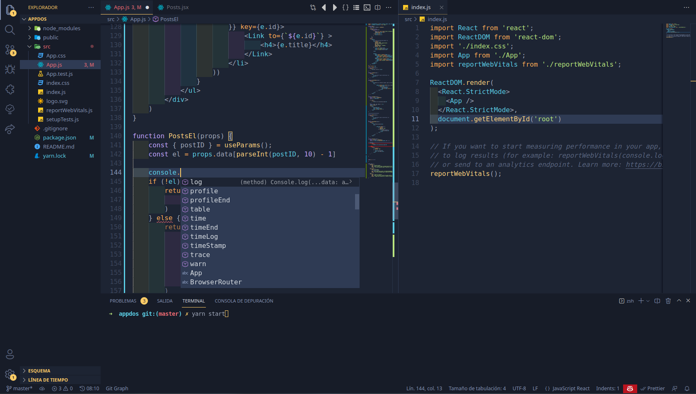

Sobre mi
Mi nombre es Yhojan David Collo Ortega y estudio Ingenieria de Sistemas.
Actualmente curso Fundamentos de Programacion Web.
Estoy aprendiendo HTML.
Una ecuacion lineal no puede llevar x2.
La formula química del Bicarbonato de Sodio es NaHCO3.
El software es como el sexo: es mejor cuando es gratis.
Fuente: Linus Torvalds
Intereses y Aprendizaje
Mis intereses académicos y personales
- Desarrollo de software
- Empresario
- Salud
Recursos de aprendizaje
Sitios web recomendados para la formación en ingeniería:
- MDN Web Docs (Documentación oficial sobre HTML y desarrollo web)
- W3Schools (Tutoriales interactivos de código)
- GitHub (Plataforma para control de versiones y repositorios)
Contacto institucional: Enviar correo electrónico
Galería

